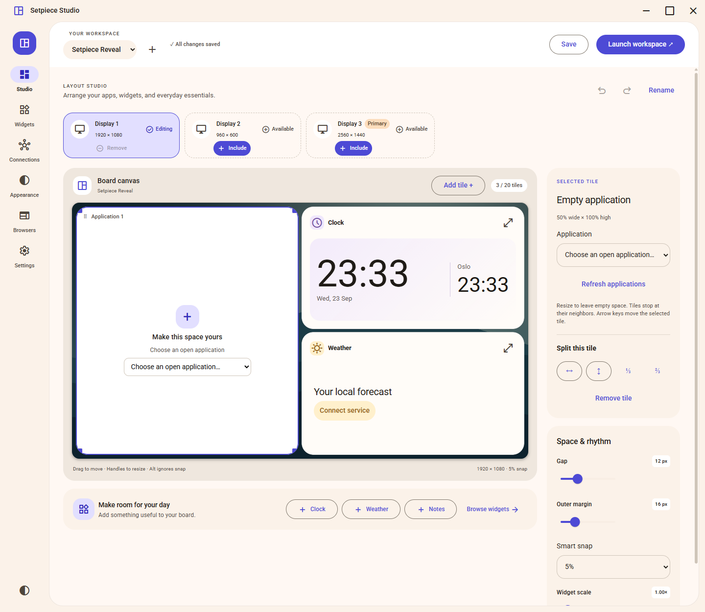

Your apps. In position.
Assign open Windows applications to tiles. Move, resize, and split the layout to fit your display.
A workspace manager for Windows 11
Your apps, browsers, and everyday essentials. Arranged together. Ready when you are.
Meet your next workspace ▷ Watch the 20-second tourTHE WORKING NOTEBOOK / 001
A few good references.
A fresh perspective.
Space for the next idea.
On the desk today
A little focus. A few essentials.
01 / Everything in its place
Some days call for a browser and a notebook. Others need the whole screen. Build a layout once, save it as a profile, and launch it when it’s time to work.
Assign open Windows applications to tiles. Move, resize, and split the layout to fit your display.
A clock, a quick note, a useful widget. Give the things you reach for a place beside your work.
Name your browsers and keep their tabs across profiles. Your research can live right in the layout.
02 / Keep the bigger picture
A video shouldn’t take over your entire desktop. Setpiece’s integrated browser can keep website fullscreen inside its tile, leaving your other apps and widgets in view.
Enable “Keep fullscreen inside tile” in the browser tile’s settings.
03 / The actual app
Start in Studio. Add what’s useful.
Then make the whole thing your own.

Captured in a demo profile. Weather is disconnected; preview integrations are labeled in the app.
IN MOTION / 00:20
Twenty seconds inside Setpiece.
YOUR NEXT SETUP
Setpiece 2.0 is available as source.
Build it, make it yours, and tell us what you think.
Profiles and browser data stay on your PC. Optional services are connected separately.
Compatibility & verification notes ↗Name your workspace and choose a display.
Add apps, widgets, and a named browser.
Stop the workspace to restore your windows.